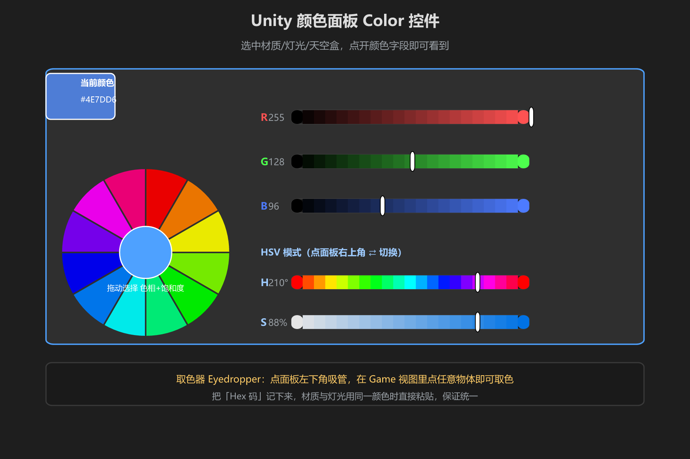
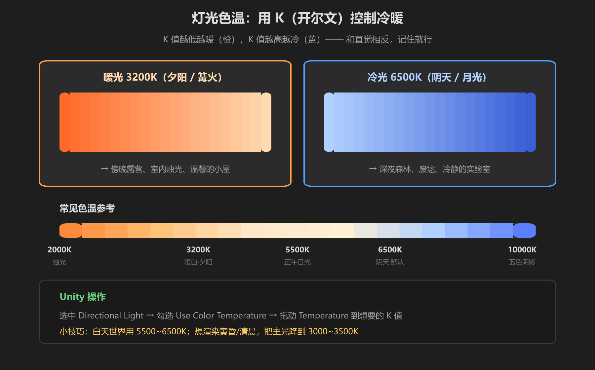

第 4 篇：Unity 色彩实践 — 材质·灯光·后期
理论讲完，进 Unity 动手。场景颜色由五个环节共同决定：材质、灯光、天空盒、环境光、后处理。每个环节都能改色，掌握顺序才能不打架。
1. 材质颜色与贴图

图：材质 Base Map 上的颜色 + 面板右侧大色块，是调材质颜色的入口
- Standard/PBR 材质的 Base Map：贴图决定材质的真实颜色，没有贴图时 Base Color（底下的颜色方块）就是颜色
- 想让材质统一到色板：把 Base Color 直接填色板 Hex 码，或用取色器从色板图里吸
- 贴图本身偏色太常见了 —— 想给整个材质「罩一层色」，调 Base Color 的饱和度/明度，比换贴图快
调色顺序：先贴图，再 Base Color。贴图定了纹理细节，Base Color 定整体色感 —— 想要暖木地板？贴图 + 橙色 Base Color 一乘就是。
2. 灯光色温

图：同一场景，3200K 是黄昏篝火，6500K 是阴天月光 —— 色温是场景情绪的最大开关
Unity 里平行光（Directional Light）默认是纯白 5500K 左右，想让场景有情绪必须调色温：
- 选中 Directional Light → 勾选 Use Color Temperature
- 拖动 Temperature：数值越低越暖（橙），越高越冷（蓝）
- 参考值：烛光 2000K / 黄昏 3200K / 正午 5500K / 阴天 6500K / 阴影 10000K
最常犯的错：主光用纯白。白天大太阳的世界也请至少 5500-6500K；黄昏氛围直接 3000-3500K。纯白灯光是「没调过色」的明显标志。
3. 天空盒颜色
天空盒决定环境光的底色和远景颜色：
- Window → Rendering → Lighting → Environment，Skybox Material 换成自己的天空材质
- 天空材质（如 Skybox/Panoramic）里的 Tint 可以整体染色：黄昏加橙、午夜加深蓝
- 不想用贴图？选 Skybox/Procedural，直接调 Sun Color / Atmosphere Thickness
4. 环境光 Ambient
环境光是没有直接光照时的「兜底光」，决定阴影是不是死黑、物体暗面是什么颜色：
- Lighting 面板 → Environment Lighting → Ambient Mode 选 Gradient 或 Color
- 夜场景：把环境光设成深蓝灰，阴影不发黑而是发蓝 —— 和「主光暖、阴影冷」正好配合
- 环境光颜色直接来自天空色 → 这也是「先调天空再调材质」的原因之一
5. 后处理调色
后期（Post Processing）是全局调色的最后一层，材质和灯光都定了再动它：
| 组件 | 作用 | 用法 |
|---|---|---|
| Color Adjustments | 整体曝光 / 对比度 / 饱和度 | 饱和拉低=灰暗压抑，拉高=鲜亮 |
| White Balance | 白平衡（Temperature / Tint） | 画面偏蓝→加暖；偏黄→加冷 |
| Tonemapping | 色调映射，把 HDR 高光压回可见范围 | 选 ACES：电影感，画面不发灰 |
顺序铁律：材质 → 灯光 → 天空/环境光 → 后处理。后处理放在最后做 —— 材质没统一前调后处理是白费功夫，调完还要回头改。
6. 雾色 Fog
雾不只是大气效果，它同时是「远处颜色」的控制器：
- Lighting → Fog，勾选 Enable Fog，调 Color 和 Density
- 清晨森林用灰白雾，黄昏用橙雾，恐怖场景用蓝灰低密度雾
- 雾色要接近天空盒色 —— 远山融入雾里才不会「接缝」
学前检查清单
- 能给材质设 Base Color 并用 Hex 码统一
- 会给 Directional Light 开色温并调到目标 K 值
- 能找到 Lighting 面板改天空盒和环境光
- 知道后处理三个组件各管什么、按什么顺序调